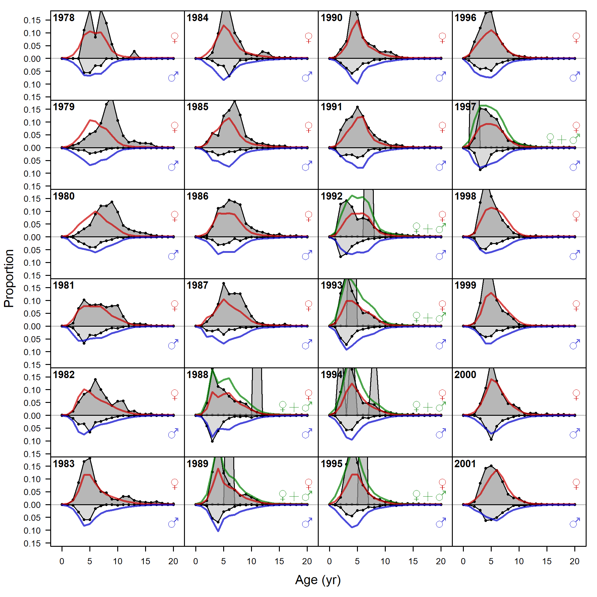
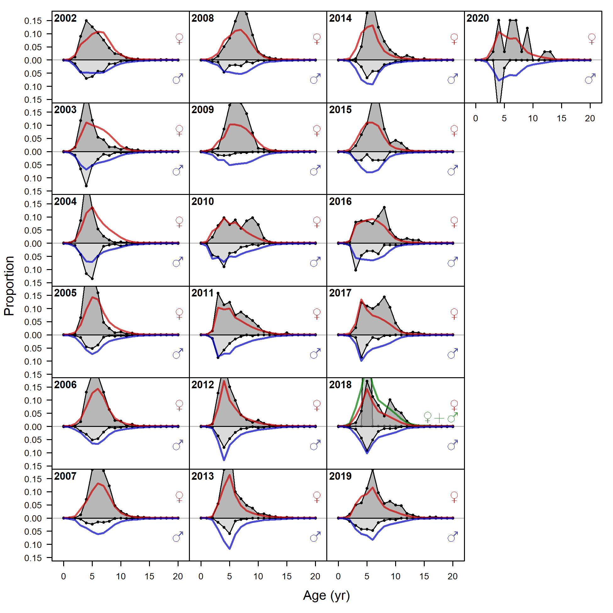
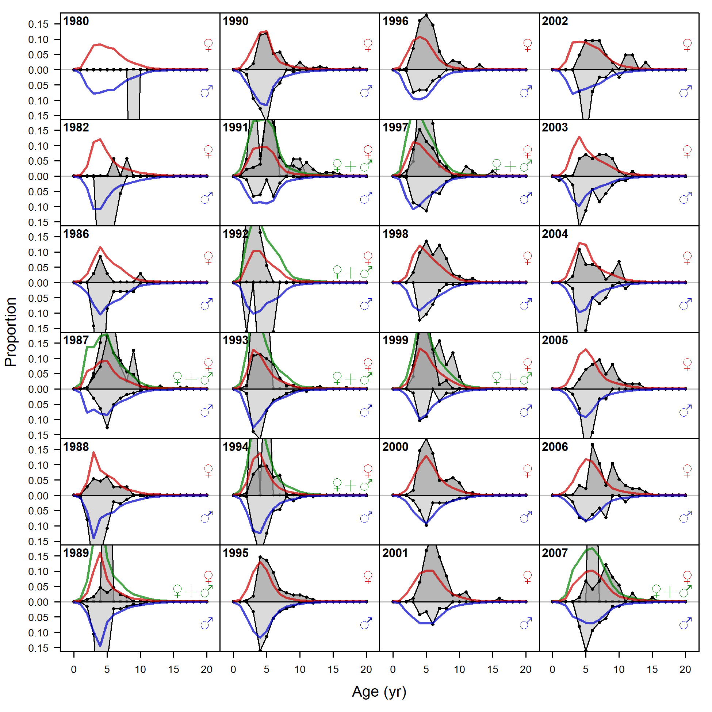
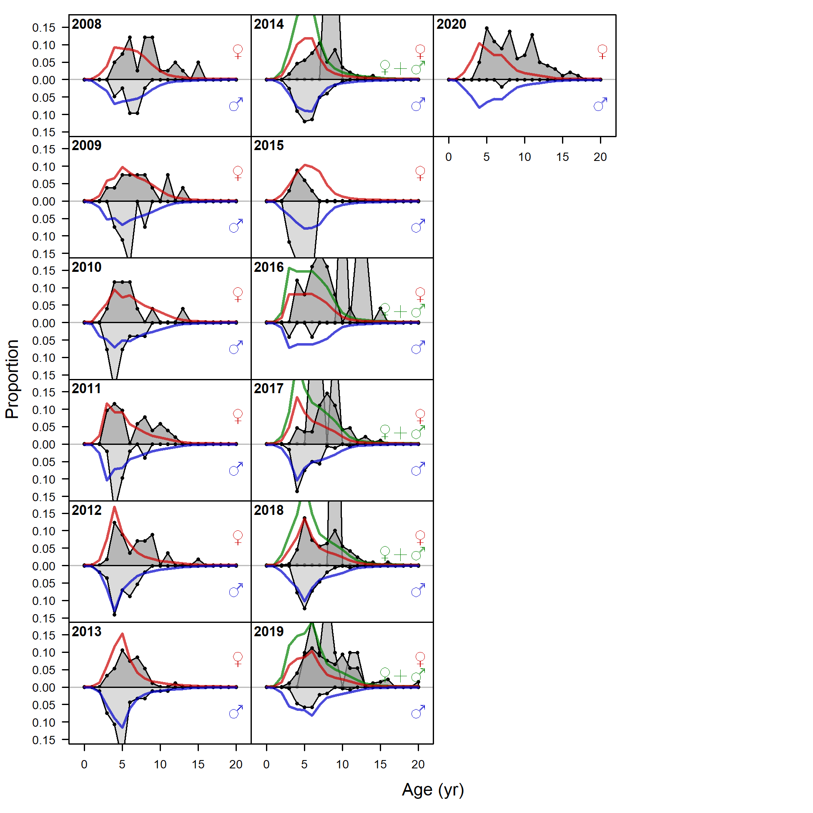
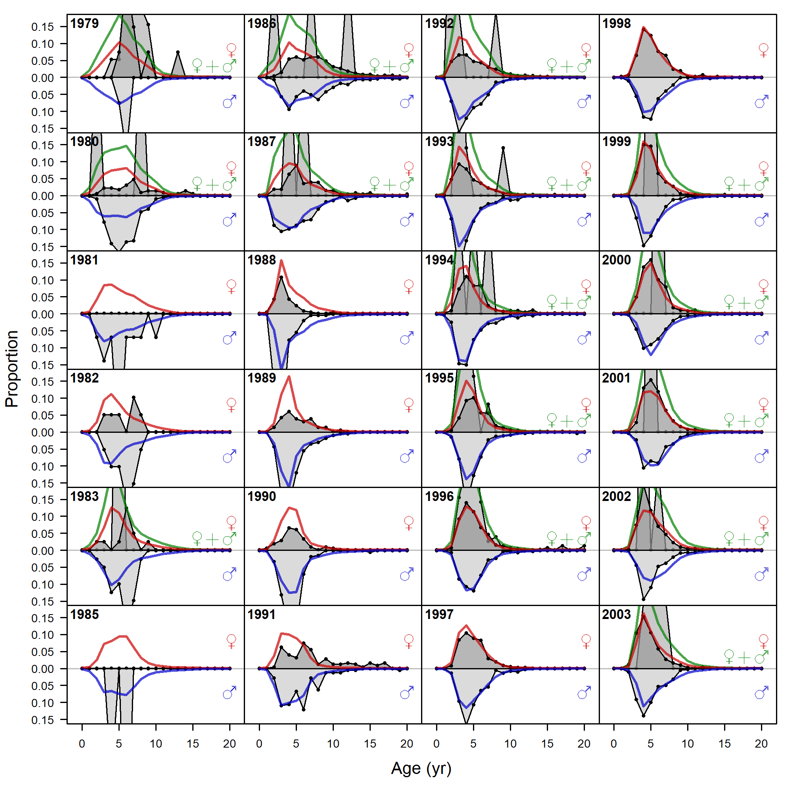
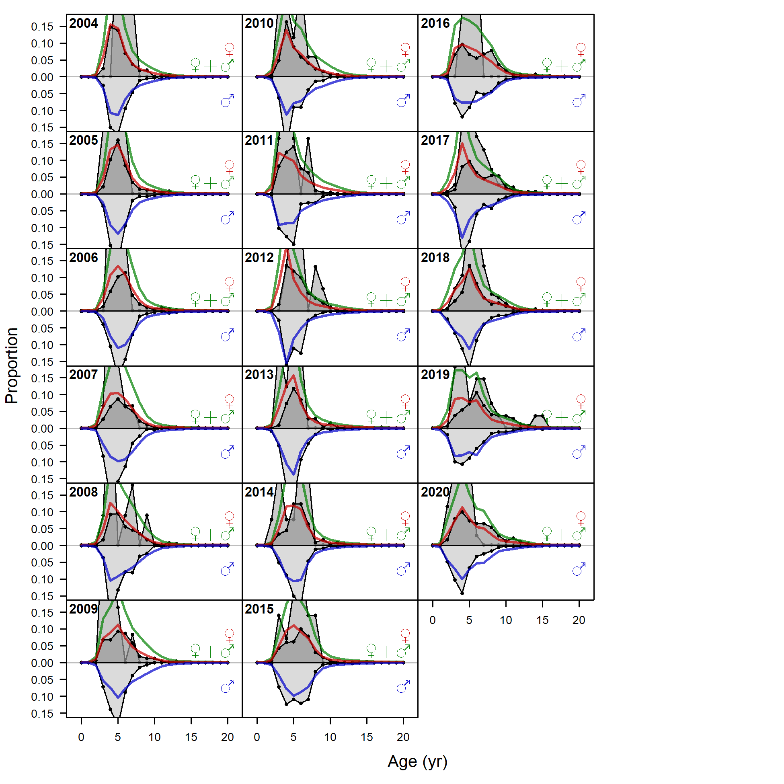
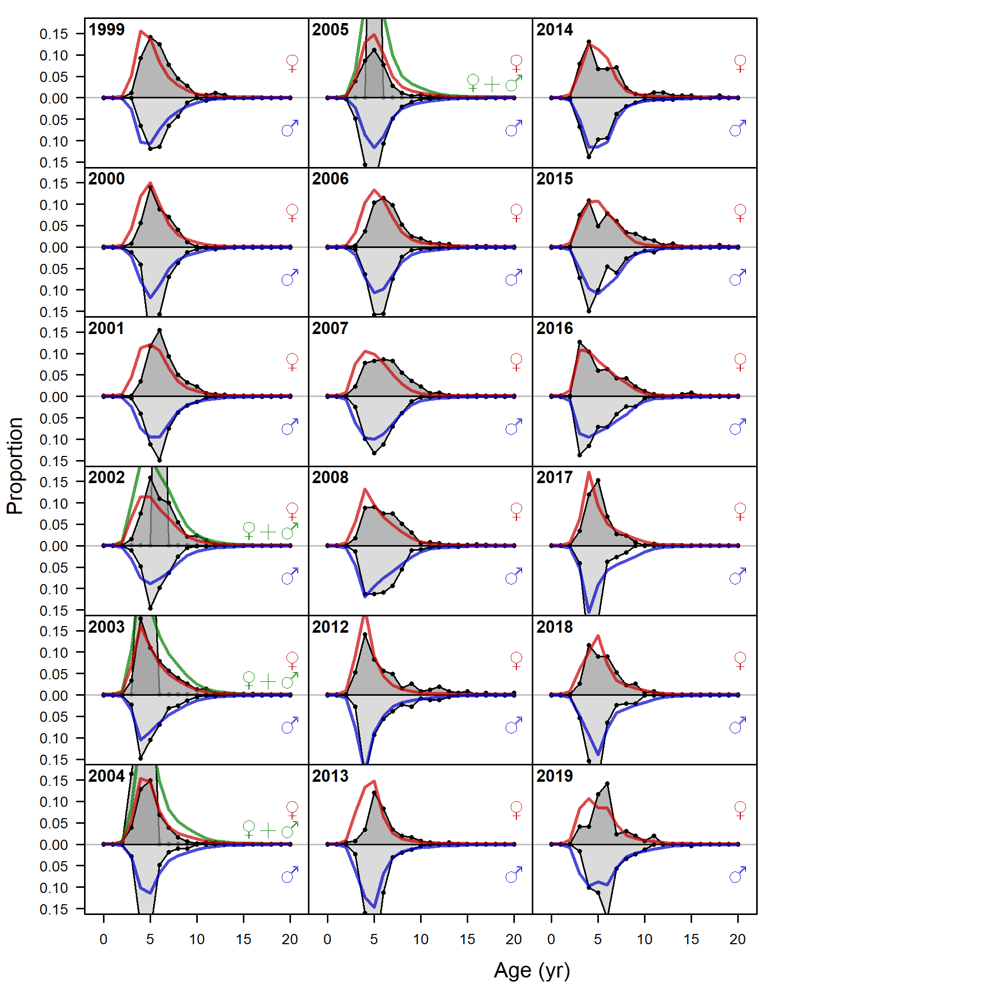
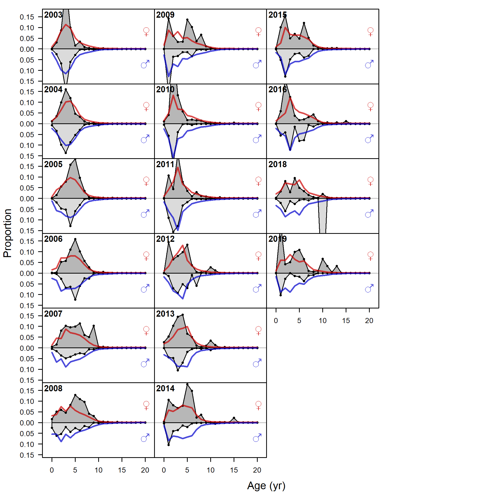

{kind=link}
{kind=link}

Pearson residuals, retained, commercial trawl (max=NA) (plot 2 of 2)
Closed bubbles are positive residuals (observed > expected) and open bubbles are negative residuals (observed < expected).
file: comp_gstagefit_residsflt1mkt2_page2.png

Ghost age comps, retained, commercial trawl (plot 1 of 2).
'N adj.' is the input sample size after data-weighting adjustment. N eff. is the calculated effective sample size used in the McAllister-Ianelli tuning method.
file: comp_gstagefit_flt1mkt2_page1.png

Ghost age comps, retained, commercial trawl (plot 2 of 2)
file: comp_gstagefit_flt1mkt2_page2.png
Pearson residuals, retained, commercial trawl (max=NA) (plot 2 of 2)
Closed bubbles are positive residuals (observed > expected) and open bubbles are negative residuals (observed < expected).
file: comp_gstagefit_residsflt1mkt2_page2.png

Ghost age comps, retained, commercial fixed-gear (plot 1 of 2).
'N adj.' is the input sample size after data-weighting adjustment. N eff. is the calculated effective sample size used in the McAllister-Ianelli tuning method.
file: comp_gstagefit_flt2mkt2_page1.png

Ghost age comps, retained, commercial fixed-gear (plot 2 of 2)
file: comp_gstagefit_flt2mkt2_page2.png

Pearson residuals, retained, commercial fixed-gear (max=NA) (plot 2 of 2)
Closed bubbles are positive residuals (observed > expected) and open bubbles are negative residuals (observed < expected).
file: comp_gstagefit_residsflt2mkt2_page2.png

Ghost age comps, whole catch, recreational Washington (plot 1 of 2).
'N adj.' is the input sample size after data-weighting adjustment. N eff. is the calculated effective sample size used in the McAllister-Ianelli tuning method.
file: comp_gstagefit_flt3mkt0_page1.png

Ghost age comps, whole catch, recreational Washington (plot 2 of 2)
file: comp_gstagefit_flt3mkt0_page2.png

Pearson residuals, whole catch, recreational Washington (max=NA) (plot 2 of 2)
Closed bubbles are positive residuals (observed > expected) and open bubbles are negative residuals (observed < expected).
file: comp_gstagefit_residsflt3mkt0_page2.png

Ghost age comps, whole catch, recreational Oregon.
'N adj.' is the input sample size after data-weighting adjustment. N eff. is the calculated effective sample size used in the McAllister-Ianelli tuning method.
file: comp_gstagefit_flt4mkt0.png

Pearson residuals, whole catch, recreational Oregon (max=NA)
Closed bubbles are positive residuals (observed > expected) and open bubbles are negative residuals (observed < expected).
file: comp_gstagefit_residsflt4mkt0.png

Ghost age comps, whole catch, Triennial Survey.
'N adj.' is the input sample size after data-weighting adjustment. N eff. is the calculated effective sample size used in the McAllister-Ianelli tuning method.
file: comp_gstagefit_flt6mkt0.png

Pearson residuals, whole catch, Triennial Survey (max=NA)
Closed bubbles are positive residuals (observed > expected) and open bubbles are negative residuals (observed < expected).
file: comp_gstagefit_residsflt6mkt0.png

Ghost age comps, whole catch, WCGBT Survey.
'N adj.' is the input sample size after data-weighting adjustment. N eff. is the calculated effective sample size used in the McAllister-Ianelli tuning method.
file: comp_gstagefit_flt7mkt0.png

Pearson residuals, whole catch, WCGBT Survey (max=NA)
Closed bubbles are positive residuals (observed > expected) and open bubbles are negative residuals (observed < expected).
file: comp_gstagefit_residsflt7mkt0.png
{kind=link}
{kind=link}
{kind=link}
{kind=link}
{kind=link}
{kind=link}